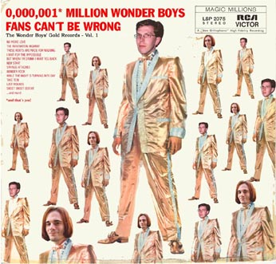

The Wonder Boys
mp3 & video

Videos:
My Old Friends
This Used To Be Our Bench
No wave disco (for Erik Ahlgren 1727)
Let's Glitch Again Like We Did Last Summer
Live Inside The Sagrada
Familia
Lament 22
Live May 22, 2009: No Camera + Be My Lord (Em)
Café CM
I Have A Dream (ABBA cover)
A Gift I Never Had
Crucifiction in E minor
Conspiracy Theory
Back In Therapy (radio edit)
Mp3s:
[Update: THE MP3 SERVER SEEMS TO BE DOWN FOR GOOD. TRY THE Svinnockarn ACCOUNT ON YOUTUBE INSTEAD, FOR PLENTY OF TWB TRACKS!]
| Conspiracy Theory (2012) |
| Alströmer Disco (2004) |
| The Night When The Losers Won (2005) |
| The Girl From Tory Story (2005) | |
| If We Get Through This We'll Get Through Anything (2005) |
| A Gift I Never Had (2005) |
| Wednesday Night (2005) |
| I Did It For You (2004) | |
| The Day Before Christmas (2004) |
| I Was So Close To Kissing You Then (2007) |
| Something's Happening To You (2004) | |
| Archie + Celia (2004) | |
| Money-Spending Machine (2005) | |
| Hello/Dead Stalkers (2004) | |
| Close-Down Announcement (2004) | |
| No Camera (2003) |
| No More Encores (2003) | |
| The Infatuation Highway (2000) | |
| The Car Ran Out Of Gas And I Guess We Ran Out Of Magic (2004) | |
| The Car Ran Out Of Gas (blues version) (2005) | |
| It Takes Guts To Be Happy (2004) | |
| Crucifiction In E Minor (2005) |
| You Bring Out My Good Sides (2003) | |
| New Start (1998) | |
| New Start 2005 | |
| Sax Play (2000) | |
| While The Night Is Turning Into Day (1998) | |
| But When I’m Drunk I Want You Back (2001) |
| There’s A Bat In The House (2005) | |
| Saffron Sunset (2006) | |
| Girl, You Need A Date With Copernicus (2005) | |
| Blood On The Rocks (2005) | |
| Schafferland (2006) | |
| But When I’m Drunk... (saffran organ / Mayumi version) (2006) |
| Strings Attached (2002) | |
| A Nap (2003) | |
| Later Later Mr Undertaker (2002) | |
| No More Love (1999) | |
| No More Love 2005 | |
| Parliamo Italiano (2004) |
| Bad Luck Charm (2001) | |
| Bad Luck Charm (Gröt version) (2002) | |
| Crime Will Prevail (2003) | |
| Talk Of The Town (2003) | |
| Pawn Shop Bossa Blues (2002) | |
| Eva’s Chair (2004) |
| Let's Glitch (snippet) (2004) |
| Lost Momentum (2006) |
| Scotty Moore (2002) | |
| My Old Friends (1998) | |
| Injokes (2004) | |
| Flaskpost (2005) | |
| Happy New Year (2002) | |
| (Missed the) Last Train To Sleepville (2003) |
| Love At First Sight (2004) | |
| Wa-Oh (Turn 'Round My Head) (2004) | |
| This Used To Be Our Bench (2004) | |
| Jesus Christ Super Sitar (2004) | |
| Not Yours (2004) | |
| Lament 2:2 (2003) |
| Good Match Rotting (2003) | |
| She Was Not The One (2003) | |
| Why Keep... II (2003) | |
| I Thought It Was A Joke (2003) | |
| Letting Go Blues (long edit) (2004) | |
| These Roots (Are Made For Walking) (1999) |
| I Wait For The Impossible (1998) | |
| I Wanna Be Bad (1998) | |
| Alone Alas/A Good Couple (2000) | |
| Sweet Sweet Defeat (2000) | |
| Last Rounds (2000) | |
| Red Eyes (2002) |
| Baby Doll (2005) | |
| Gong Gong Song (2004) |
| Those Were The Days (2004) | |
| The Wonder Boys Theme (1999) |
| Jimmy’s Girl (Said ”Wait!”) (1997) | |
| Sax Play demos (1989, 1990, 1994 x 2) | |
| Lately (Goin’ Out) (2003) | |
| On The Floor (2003) | |
| Saturday Evening Sun (2002) | |
| Not Present (2003) |
| Café CM (2004) | |
| Wonder Rock (2000) | |
| Let's Glitch Again Like We Did Last Summer (2004) | |
| Let's Glitch Nåt Så In I Helvete (medley) (2004) | |
| Oh Baby You’re So Shy (demo) (1997) | |
| So You Say You Wanna Rock & Roll (1997) |
| But Of Course (Maybe I’ll Laugh) (2003) |
| Broiler Spoiler (2005) |
| Drunk (2006) |
| A Story (1978) (2005) |
| Black & White Pictures (1998) | |
| Synthing’s Happening To You (2005) | |
| Shoe Panel Guitar Love (2002) | |
| Librarians (med reverb) (2005) | |
| Be My Lord (Em) (1998) | |
| Thank You, Goobye (1998) |
| The Dead Pay No Entrance (2007) |
(Note: if anyone out there would like to donate some additional server space
for even more mp3 tracks, get in touch with us
please... And also, let us know if any links suddenly are broken, etc)
| Emma & David: ”Firefly” cd EP (2003) | |
| Firefly (radio edit) | |
| Might Aswell Be Dead | |
| Firefly (full version) | |
| E&D cd sleeve |
{kind=link}